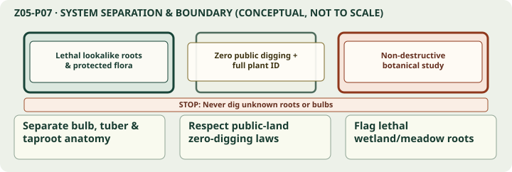

Z05-P07 · Wild foods and poisonous lookalikes · New manuscript
Underground Structures: Taproots, Rhizomes, Tubers and Bulbs
Recognize extreme misidentification and legal-digging risks associated with wild roots, tubers, and bulbs.
When it applies · Botanical study of perennial underground storage organs across Minnesota.
Equipment · Flora key only; zero digging on public lands or protected flora sites.

Actions
- Distinguish layered bulbs (Allium vs toxic death camas/daffodil), horizontal rhizomes (cattail vs toxic blue flag iris), fleshy taproots (burdock vs lethal hemlock), and stem tubers.[B11, B20]
- Observe strict public-land prohibitions: Minnesota State Parks, SNAs, National Parks, and rare-plant statutes prohibit digging wild roots, bulbs, or corms.[B17, B22, B23]
- Treat subterranean wild food identification as the highest-risk botanical category because dead winter tops remove diagnostic foliage and lethal Cicuta/Zigadenus roots resemble benign tubers.[B11, B17, B24]
Failure recognition · Digging unflowering roots in spring marshes or meadows risks fatal water-hemlock or death-camas ingestion and destroys rare native perennials.[B11, B17]
Verify · Zero public-land digging occurs, above-ground diagnostic structures remain intact, and consumption stays strictly withheld.[B17, B22, B24]
Stop or change course · Stop immediately whenever above-ground flowers/foliage are missing or wetland/public-land digging bans apply.[B11, B17, B22]
Evidence and editorial notes
- B11 · USDA ARS · Poisonous Plant Research Laboratory Reference (Current web edition)
- Section: Water hemlock (Cicuta) and poison hemlock (Conium) lethality · Conditions: Wetlands, ditches, and disturbed ground with Apiaceae (carrot-family) umbels
Support: Water hemlock (Cicuta maculata) and poison hemlock (Conium maculatum) contain potent neurotoxins causing rapid seizures, respiratory arrest, and death even from small bites.
Limitations: Never forage wild carrot-family roots or foliage without independent qualified botanical verification; reject any wet-ground umbel outright. · Conflicting evidence: None noted.
Editorial note: Mandatory Z05 lethal Apiaceae stop rule. · Specialist reviewer: Botanist and medical toxicologist
Primary source · checked 2026-11-25 - B17 · Minnesota DNR · Minnesota Rare Species Guide and Native Plant Reference (Current web edition)
- Section: Protected rare plants and harvest conservation boundaries · Conditions: Minnesota endangered, threatened, and special-concern flora
Support: Rare native plants (e.g., wild ginseng, orchids, prairie perennials) carry strict legal protections against digging or harvest.
Limitations: Never dig unknown roots or bulbs on public land; verify legal collecting status before touching any specimen. · Conflicting evidence: None noted.
Editorial note: Prevents illegal digging of protected flora. · Specialist reviewer: State botanist and conservation officer
Primary source · checked 2026-11-25 - B20 · USDA Forest Service · Celebrating Wildflowers: Plant Identification and Conservation (Current web edition)
- Section: Botanical morphology terminology and multi-character keys · Conditions: Observing leaf venation, margins, flower symmetry, and fruit anatomy
Support: Accurate plant identification requires confirming multiple independent morphological characters at the observed life stage.
Limitations: Missing flowers, fruit, or underground parts require stopping identification rather than guessing. · Conflicting evidence: None noted.
Editorial note: Enforces multi-feature identification standard. · Specialist reviewer: Plant taxonomist
Primary source · checked 2026-11-25 - B22 · Minnesota DNR · Scientific and Natural Areas Program and Protected Habitats (Current web edition)
- Section: Scientific and Natural Areas zero-foraging prohibition · Conditions: Minnesota SNAs and strictly protected preserves
Support: Foraging, picking berries, cutting mushrooms, or digging roots is strictly prohibited inside Minnesota SNAs.
Limitations: Check land status before collecting even common fruits or mushrooms. · Conflicting evidence: None noted.
Editorial note: Public-land foraging compliance boundary. · Specialist reviewer: Minnesota DNR resource manager
Primary source · checked 2026-11-25 - B23 · Minnesota DNR · Minnesota State Park Rules and Resource Collecting Restrictions (Current web edition)
- Section: State park berry/mushroom rules vs root/plant bans · Conditions: Minnesota State Parks permitted vs prohibited gathering
Support: Minnesota State Parks prohibit digging roots or damaging plants; limited personal berry/mushroom rules apply only where explicitly permitted by current DNR statute.
Limitations: Always verify current park-specific rules before picking anything; never assume universal permission. · Conflicting evidence: None noted.
Editorial note: Accurate Minnesota State Park gathering rule. · Specialist reviewer: Minnesota DNR parks reviewer
Primary source · checked 2026-11-25 - B24 · CDC MMWR · Notes from the Field: Severe Mushroom Poisoning — Minnesota 2018 (MMWR 68(21))
- Section: Rejection of folklore edibility tests and AI-only visual clearance · Conditions: All wild plant, berry, root, and fungal screening
Support: Universal skin/lip rub tests, silver-spoon tests, animal-browsing observations, single photos, and generated illustrations never establish edibility.
Limitations: If any diagnostic feature, site-contamination history, or expert review is missing, consumption remains strictly WITHHELD. · Conflicting evidence: None noted.
Editorial note: Enforces Z05 fail-closed edibility rule. · Specialist reviewer: Botanist, mycologist, and clinical toxicologist
Primary source · checked 2026-11-25
Source lineage · New manuscript (Z05 P19-C plant morphology) · Classification · New manuscript.